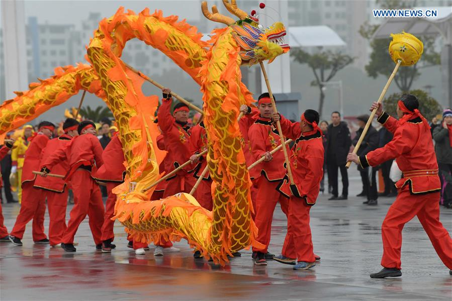

Chinese New Year (also called Lunar New Year and celebrated in many countries outside China), starts on the second new moon after the winter solstice.
The exact date varies from year to year, but it always falls during the winter. In China, the holiday lasts for weeks!

Celebrations for Chinese New Year take all kinds of forms, from enormous public fireworks displays and exciting lion dances to special family dinners at
home, giving children money in red envelopes for good luck. This vibrant, thriving holiday with ancient roots brings warmth and cheer to winter every year!
In the Southern Hemisphere, the winter holidays fall during the summer. Australian temperatures can get as warm as 84 degrees Fahrenheit around Christmas.
So naturally, many Australians head to the beach. Families and friends partake in swimming, picnics and volleyball. Often, some surfing Santas will make an appearance.
A couple of Sydney beaches are known to be a hotspot for foreign travelers and backpackers.
In recent years the wild parties thrown there have gotten so out of hand that alcohol bans have been implemented.